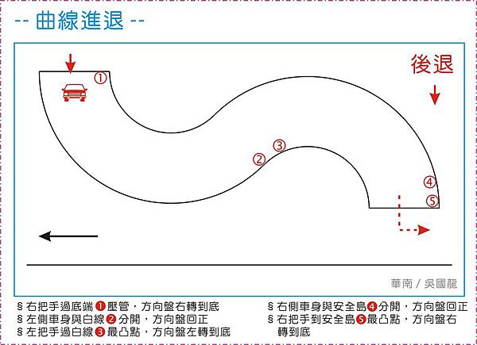
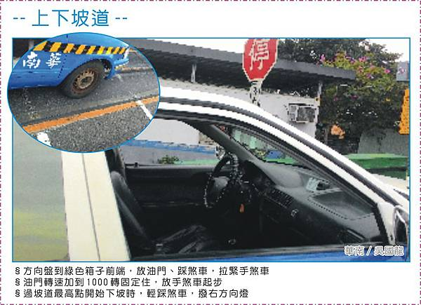
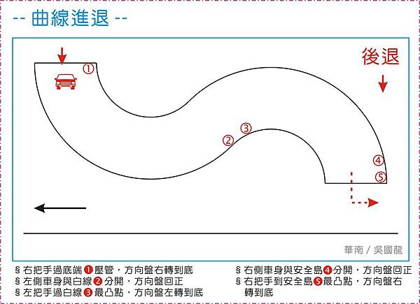
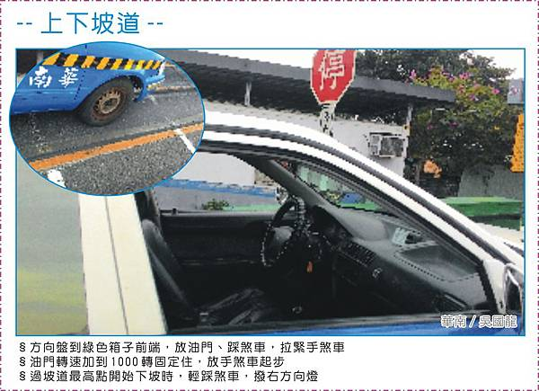
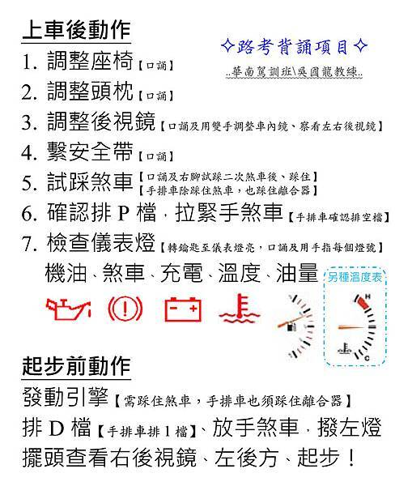

價格
位置:例如離家近
原車原場考照:熟悉的車和場地會有安全感也比較不緊張喔
道路駕駛的次數
場地大小
上課時間
學科課程:車輛基本構造、保養、汽車保險、肇事處理等 、教練的經驗
筆試85分 30分鐘40題
考題含：(1)肇事預防 (2)交通法規 (3)急救常識、長隧道 (4)高、快速公路管制規則 (5)駕駛道德、交通安全常識及行車安全檢查與維護 (6)鐵路平交道 標誌、標線、號誌、汽車儀表警示、指示燈…等
題庫 模擬試題場內考試70分
道路考試70分
場內路考有八項:鐵路平交道、行人穿越道、上下坡道(上坡起步) 、換檔穩定測試(直線加速) 、交叉路口、倒車入庫、路邊停車、曲線進退(S型)
路線圖網址 



道路考試不及格幾個主要原因：起步、轉彎或變換車道未先撥方向燈、路邊臨時停車擦撞到安全島、走錯車道、行駛中壓到地上實線(黃、白)、終點未熄火
